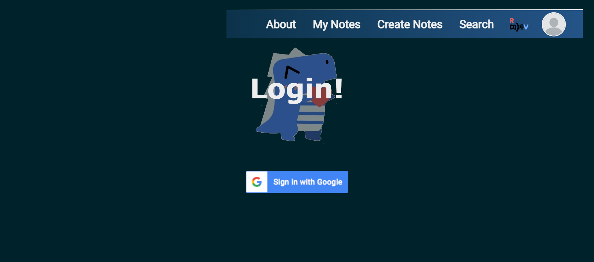
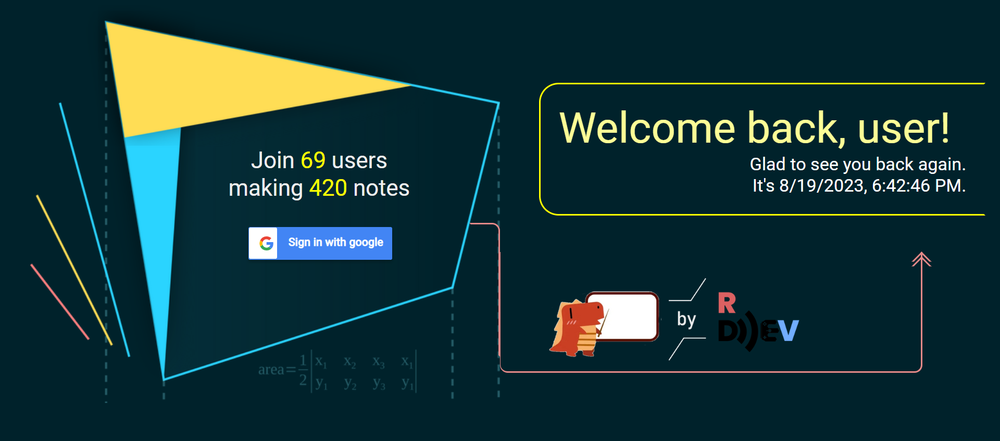
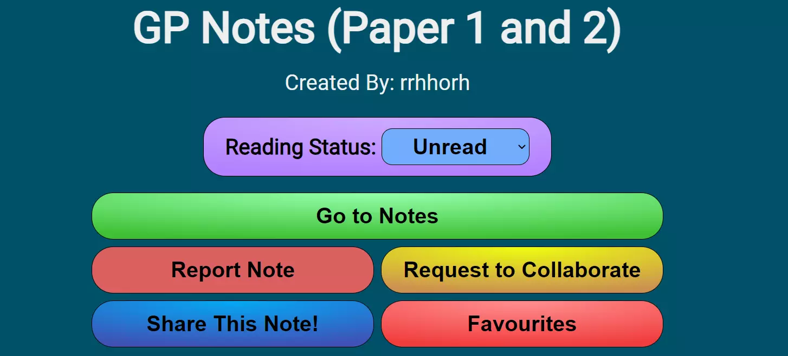
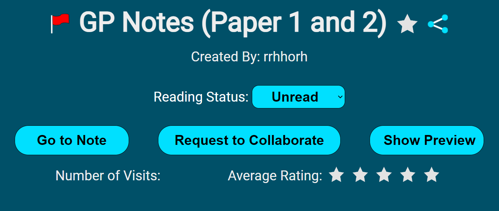

PeerView is a free website made by my friend, Chua Zhong Ding, for students to upload and sort through notes made by them, as well as to promote collaboration among students in making notes other than mentoring other students. Listed below are my contributions to the website, with images to illustrate the changes. Do note that these changes have not been finalised yet, but are indicative of my contributions thus far.
Link to website: https://peerview.x10.mx/
Before:
After:
I was in charge of implementing the design (design was done by someone else) of the new login page using HTML, CSS and JS.
Before:
After:
I was in charge of both designing and implementing my design of the new popup box that appears when a note is clicked on, using HTML, CSS and JS. The new design is less cluttered than the old one as some of the buttons are condensed into an icon. However, the accurate information of 'number of visits' and 'average rating' is going to be done by other members of my team.